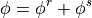
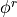
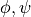
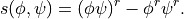

Introduction¶
The purpose of this set of modules is to implement horizontal 1- and 2-dimensional spatial filtering of 2- and 3- dimensional output from MONC (and similar data), as well as 1D power spectra from 2D fields.
Filtering¶
This notionally corresponds to a split of a variable:

Note that this is not the same as coarse graining; the ‘resolved’ field  has the same number of gridpoints as the original, it is just smoother (with one exception noted below).
The code also produces ‘subfilter’ fluxes, variances and covariances: for any pair of variables :

Power Spectra¶
The Power Spectra computed are conventional 2D power spectra averaged either in x- or y-direction, or radial spectra averaged around the azimuthal direction. Care has been taken to normalise in using standard and corrections can be applied to the radial spectra. See Durran et al. (2017) for details.
Output Files¶
An important feature of the code is that it creates two types of derived files.
A single file containing intermediate data such as
interpolated to the required grid, stored at variable th_L_on_w in NetCDF. This must be setup by the user using
setup_derived_data_file(). The user must tell the code to use it by settingoptions['save_all'] = 'Yes'. The file name is created from arguments destdir, source_file and fname.A file for each filter containing filtered variables and sub-filter counterparts. This must be setup by the user using
setup_filtered_data_file(). The file name is created from arguments destdir, source_file, fname and filter_def.id.
Variable Names¶
This package uses xarray - returned variables are xarray DataArrays. These have names; this package follows the following naming convention.
Filtered variables obtained using
filter_field()orfilter_variable_list()are retrieved from the filtered variables file if present or calculated and stored therein if not. Data are returned as two variables, namedf(x)_randf(x)_s, the ‘resolved’ and ‘sub-filter’ parts of variablex, withxincluding the grid specification (e.g.u_on_w) iffilter_variable_list()is used.Filtered products of pairs of variables obtained using
quadratic_subfilter()orfilter_variable_pair_list()are retrieved from the filtered variables file if present or calculated and stored therein if not. Data are returned ass(x,y)_on_g, where x and y are the two variables and g is the requested output grid. Iffilter_variable_pair_list()is used withoptions['save_all']set to'yes', the variablesx_on_g.y_on_g,f(x_on_g.y_on_g)_randf(x_on_g.y_on_g)_sare also saved.
Filters¶
- A number of filters have been implemented, currently
Gaussian.
Spectral wave cutoff.
Spectral cylindrical wave cutoff.
Running mean (or ‘top-hat’).
2D version of the 1-2-1 filter.
For completeness, a ‘whole domain’ filter in which the resolved field is the horizontal domain average. In this case the resolved field has no horizontal dimensions.
An example of use can be found in examples/subfilter_file.py.
Dependencies¶
At Version 0.6 the repository was split - please ensure https://github.com/ReadingClouds/monc_utils.git is also installed.
Version History¶
Latest version is 0.6.0
New at 0.6.0
Note this is a major re-organisation, with the packages io, thermodynamics and utils moved to https://github.com/ReadingClouds/monc_utils.git. P
New at 0.5
Complete re-structuring.
Addition of
subfilter.spectra.The
subfilter.subfilter.filtered_field_calc()function outputs filtered variables phi inder the names “f(phi)_r” and “f(phi)_s”.
New at 0.4
Use of xarray.
Use of dask for filtering.
Correction of MONC grid specifications on input.
New at 0.3
The filters.filter_2D class has been replaced with
subfilter.filters.Filter. This now accepts an optional argument ndim when creating a Filter instance. This may be 1 or 2 and defaults to 2. The use_ave option is no longer supported.The
subfilter.subfilter.filter_variable_pair_list()function outputs filtered pairs inder the name “s()_on_grid” where “grid” will be “u”, “v”, “w” or “p”.
New at 0.2
New ‘options’ dictionary passed to many functions.
- More efficient FFT convolutions. options[‘FFT_type’] can equal:
‘FFTconvolve’ for original implementation. Deprecated.
‘FFT’ for full FFT.
‘RFFT’ for real FFT.
- Two types of derived files are produced.
As before, a file for each filter containing filtered variables and sub-filter counterparts. This must now be setup by the user using
subfilter.setup_filtered_data_file().A single file containing intermediate data such as
interpolated to the w grid, variable th_L_on_w in NetCDF.
This must now be setup by the user using subfilter.setup_derived_data_file(). The user must tell the code to use it by setting options[‘save_all’] = ‘Yes’.